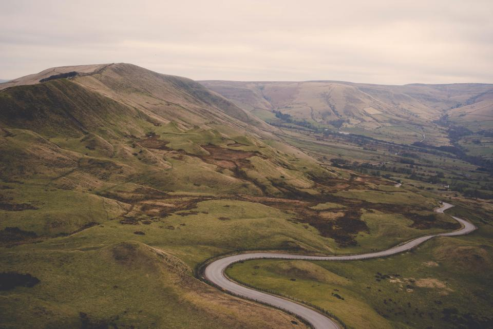

Intro to Kimberly
My coding journey started back in January 2014, while listening to NPR on the radio outside of the YMCA. Not wanting to go in to workout, I sat and listened to the program. They were talking about coding and learning to code and if you were interested in a change come out to the PeaBody that nite at 7pm. I had no idea what I was getting myself into but I thought I should take the journey.
So that nite to scared to start my adventure by myself or just wanting support I dragged my husband with me to the PeaBody. As soon as we drove up the place was abuzz and cars and people were jam packed. Bradley aka the husband dropped me off and went off to find a parking spot. While waiting for him I watched as I saw all sorts of people filing in to the PeaBody wanting to make a dream come true or at least create a change in their lives this goes for me also.
What a Night?!! After listening and deciding I was up for the challenge I went straight home and signed up for the course online. It has been a journey that I am so glad I was able to take and even though there have been challenges I somehow continued to find the strength to keep going. Some may think my journey has somewhat stopped and I have reached the summit but in coding and technology the journey is continuous. Just like Life! Read more about my journey in this thing called life...